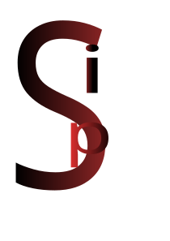

Imagine if C and a circus had a baby and that baby rode a unicycle
while juggling flaming semicolons. That’s Sip.
extern, link, clink:
doorbells for your C code guests.(Under heavy development — confetti and stray code fragments everywhere.)
Behold, a snippet so spicy your keyboard might blush:
Ta‑da! That’s Sip in its raw, unfiltered glory.
(Subject to change, vanish, or spontaneously grow legs.)
PS: I’m also crafting “sipc,” a lean‑mean libc sidekick for ultimate speed.